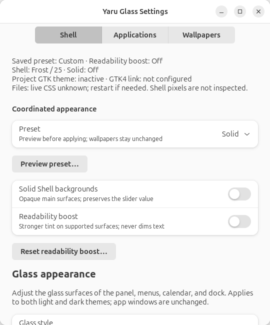
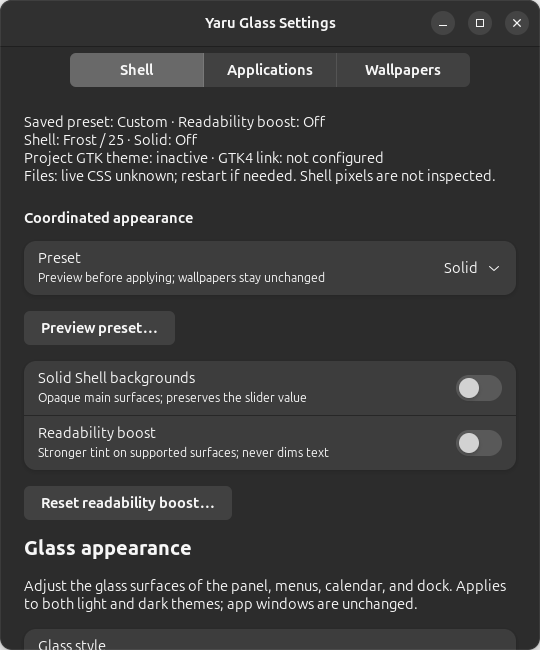
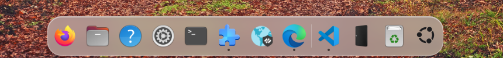

Yaru Glass — User Manual
Version 2.3.1 · for Ubuntu 24.04 LTS (GNOME Shell 46) and Ubuntu 26.04 LTS (GNOME Shell 50)
Yaru Glass is a pair of desktop themes for Ubuntu, Yaru-Glass (light) and Yaru-Glass-dark (dark). Both are built on top of Ubuntu's own Yaru theme with translucent surfaces and coordinated light/dark styling. Ubuntu's Yaru icons and the Ubuntu logo are kept.



Contents
- What you get
- Requirements
- Installation
- Everyday use
- Customisation
- Updating
- Uninstalling
- Troubleshooting
- Files and folders
- Credits and licences
1. What you get
| Area | Look |
|---|---|
| Menu bar (top panel) | Transparent tint, slimmer, regular-weight text, clock on the right |
| Menus, Quick Settings, calendar, notifications | Translucent glass, large rounded corners, pill toggles, blue (#007AFF) highlights |
| Dialogs (log out, password, …) | Rounded glass card, pill buttons with spacing from the edges |
| Dock (Ubuntu Dock) | Floating glass dock, 24 px corners, native dashes in each app icon's dominant color |
| App switcher, volume/brightness pop-ups | Glass panels |
| Windows | Red / yellow / green buttons on the right; symbols show on hover, grey when the window is inactive; 14 px rounded corners |
| Apps | Blue accent in both older (GTK 3) and newer (GTK 4 / libadwaita) apps |
| Font | Inter, an open-source interface typeface |
| Search | Standard GNOME search: press Super and type |
| Light / dark | Switches automatically at sunrise and sunset (Automatic Theme Switcher) or with the Dark Style toggle |
Extensions installed and configured
| Extension | Purpose |
|---|---|
| User Themes | Applies the theme to the menu bar, menus, dock and dialogs |
| Blur my Shell | Rounded dynamic panel, popup and dock backgrounds; independent blur switch; unrelated effects preserved |
| Just Perfection | Moves the clock to the right |
| Logo Menu | Ubuntu 24.04 only: menu behind the Ubuntu logo (top-left); GNOME 50 uses standard Activities |
| Automatic Theme Switcher | Light theme by day, dark theme by night |
| Ubuntu Dock, Ubuntu AppIndicators | Ubuntu built-ins; enabled if present |
2.2.0 extension policy
These exact releases are enforced and tested on the named Ubuntu stacks. The matrix is unchanged in 2.2.1. See current release evidence and validation limits.
| Extension | GNOME 46 | GNOME 50 |
|---|---|---|
| User Themes | 60 | 79 |
| Blur my Shell | 77 | 77 |
| Just Perfection | 37 | 37 |
| Automatic Theme Switcher | 11 | 11 |
| Logo Menu | 41 | Omitted pending real event-handler checks |
| Ubuntu Dock | Metadata 90; package 90ubuntu3 |
Metadata 105; Ubuntu extension bundle 50.26.04.8ubuntu |
| Ubuntu AppIndicators | Package 58-1ubuntu24.04.1 |
Ubuntu extension bundle 50.26.04.8ubuntu |
Ubuntu AppIndicators has no numeric version in its metadata, so the policy checks
its Ubuntu package instead. Installation checks pinned archive metadata and
required profile schemas; enabling checks the installed release. Managed blur
also checks the active release and rounded dynamic renderer. Existing mismatches
are reported, not silently replaced or downgraded. Automatic extension/system
updates can move outside this policy; do not automatically downgrade security
updates to satisfy it. A revised policy needs new validation.
--no-extensions avoids installing/enabling extensions; --theme-only also
avoids importing their settings. Both skip the independent Lock Screen companion.
See the installed helper diagnostics for the required release.
Enabling uses one batch request and waits for the Shell's reported state.
An accepted request is not proof of activation. If managed appearance cannot
activate, the installer exits with an error after explaining that files were
installed but appearance is incomplete. Check Extension Manager, log out/in,
and rerun the installer; do not treat that state as a successful installation.
2. Requirements
- Ubuntu 24.04 LTS / GNOME Shell 46 or Ubuntu 26.04 LTS / GNOME Shell 50 with the standard Ubuntu desktop. Wayland is the validated session. Other Ubuntu/GNOME versions are untested.
- An internet connection during installation, to download the extensions.
- Your user password (only for installing missing system packages with
sudo).
See 2.0.0 validation and limits, including the software-rendered Ubuntu 26.04 test VM and isolated lifecycle checks. Finish Ubuntu's first-run wizard before installation; its appearance page can reset custom GTK themes. Logo Menu is not installed, enabled or configured on GNOME 50 because release 45 logs an unimplemented event-handler error. Existing independently installed extensions are left alone. Its upstream fix will be rechecked before each project release; support is not inferred from extension metadata alone.
The installer adds these Ubuntu packages if they are missing:
yaru-theme-gtk, yaru-theme-gnome-shell, yaru-theme-icon, yaru-theme-sound,
gnome-shell-extension-ubuntu-dock, gnome-shell-extension-appindicator,
gnome-shell-extension-manager, python3, python3-gi, gir1.2-glib-2.0,
libglib2.0-bin, gir1.2-gtk-4.0, gir1.2-adw-1, gir1.2-gdkpixbuf-2.0, dconf-cli, curl, unzip,
fontconfig.
3. Installation
Switching from an earlier project name
This is a breaking rename, not an automatic upgrade from an earlier-branded installation. Commands, desktop app IDs, theme names, configuration paths and the sync service now use Yaru Glass. No legacy aliases are installed.
- Back up the earlier installation's preference files and original installation backup to a separate location.
- Run the earlier installation's own uninstaller to restore its managed desktop settings and stop its sync service. Do not use this version's uninstaller for that installation. Do not purge anything before making the backup.
- Install Yaru Glass from the current source or a newly built package. This creates a new first-install backup after the earlier theme has been removed.
- To retain appearance choices, copy only
settings.json,app-appearance.jsonandfiles-appearance.jsonfrom your saved preferences into${XDG_CONFIG_HOME:-$HOME/.config}/yaru-glass/before opening Settings. Do not copy managed-effect/wallpaper ownership state, service files or old installation backups into the new installation.
The source rename does not modify an existing installation or rebuild historical archives. The package commands below illustrate the new naming convention; use the actual filename and version of your newly supplied package.
Installing a package
- Copy
yaru-glass-theme-2.0.0.tar.gzand its.sha256file to the target computer. - Open Terminal in the folder that holds the file and run:
bash
sha256sum -c yaru-glass-theme-2.0.0.tar.gz.sha256
tar xzf yaru-glass-theme-2.0.0.tar.gz
cd yaru-glass-theme-2.0.0
./scripts/install.sh
- Answer Y, and type your password if asked.
- If the installer says "New extensions were installed — log out and log back in", do so. On Wayland, GNOME only loads new extensions after a fresh login.
- Restart any apps that were open.
Run the installer as your normal user, not with
sudo. It asks for the password itself when it needs it.
Installer options
| Option | Effect |
|---|---|
--no-apt |
Skip system packages (no password prompt). Use when everything is already installed. |
--no-extensions |
Don't download or enable extensions |
--theme-only |
Install the themes, font and sync service, but keep your current dock and extension settings |
-y, --yes |
Don't ask for confirmation |
-h, --help |
Show help |
What the installer does, step by step
- Installs missing system packages (asks for your password).
- Copies itself to
~/.local/share/yaru-glass. - Backs up your current appearance and extension settings to
~/.local/share/yaru-glass/backup/original(only on the first install). - Installs the bundled Inter font to
~/.local/share/fonts/Inter. - Downloads the extensions above from extensions.gnome.org (the right version for your GNOME) and enables them. Extensions you already have are left as they are.
- Builds the two themes into
~/.local/share/themesfrom your system's Yaru theme. - Applies fonts and the settings profile (dock, Blur my Shell, clock position, Search Light, …).
- Sets up the background service
yaru-glass-sync(see 4.2). - Activates the light or dark theme to match your current Dark Style setting.
You can run the installer again at any time. It is safe to repeat, and your original backup is never overwritten.
4. Everyday use
4.1 Light and dark
You can switch in either of these ways:
- Automatically: Automatic Theme Switcher uses the light theme from sunrise and the dark theme from sunset, based on your location. To change the times or triggers, open Extension Manager → Automatic Theme Switcher → ⚙.
- Manually: use the Dark Style toggle in Quick Settings (top-right menu).
Both ways switch everything together: apps, menu bar, menus and dock.
4.2 The sync service
yaru-glass-sync runs in the background and keeps all parts of the theme on the same
variant. Without it, newer GNOME apps or the menu bar could stay light while the rest
turns dark. It only acts while one of the Yaru Glass themes is selected. If you choose a
different theme, it removes its own tweaks automatically.
systemctl --user status yaru-glass-sync # check it is running
systemctl --user restart yaru-glass-sync # restart it
journalctl --user -u yaru-glass-sync # its log
4.3 Search
Press Super (the Windows/⌘ key), type, then press Enter to use GNOME's built-in search. The theme no longer installs or configures Search Light on either Ubuntu stack, and new installs leave keyboard-layout shortcuts unchanged. Upgrades leave any existing Search Light installation and settings alone; disable or remove it in Extension Manager if unwanted. Original backups and installer ownership records are retained so uninstall can still restore earlier settings.
4.4 Choosing the theme manually
The themes are listed as Yaru-Glass and Yaru-Glass-dark, for example in GNOME Tweaks. Selecting either one is enough; the sync service picks the matching menu bar theme and Dark Style setting.
5. Customisation
Theme transparency
Open Yaru Glass Settings from the application launcher, or run
~/.local/bin/yaru-glass-settings.
The window has five pages: Shell for glass style and Shell transparency, Applications for Settings-app and Files transparency, presets and restart, Wallpapers for the light/dark image previews and pickers, then Diagnostics and Updates. All five share one navigation group; diagnostics and update controls are inline pages, not separate windows. Each page scrolls independently. At narrow window widths, page navigation switches to a compact drop-down; the pages scroll vertically without horizontal scrolling. Switching pages does not apply, reset or save any settings. Status and Retry controls stay beside their corresponding settings; Shell/app/Files errors select the relevant page so they are not hidden.
Choose Frost (default, stronger tint) or Crystal (clearer tint). Version 2.2.0 adds Layered lighting and reflections. Dynamic background blur is on by default and samples windows behind Shell surfaces, rather than a separate wallpaper image. The independent switch disables blur without disabling the layered tint. Solid suppresses effective blur without changing the saved preference. Older preference files default to blur on. Blur my Shell must be enabled and running with the required rounded rendering capabilities. Other pipelines/effects are left alone. Leaving this theme restores managed extension settings; returning reapplies the saved style and blur preference. Version 2.2.1 fixes a 2.2.0 color encoding bug that hid all six managed pipelines from Blur my Shell and caused Default fallback. Upgrading and reapplying the saved appearance repairs the existing library, preserving unrelated effects and color values; do not reset the library manually. Repair briefly disables and reenables Blur my Shell, waits for its active state and rebuilds cached panel, popup and dock effects. Ordinary style changes do not restart the extension. If preferences were already open, close and reopen them after upgrading. The 2.2.1 release notes distinguish actual parser/preferences and running-actor checks from remaining visual limits. Extension metadata or automated CSS checks alone are not desktop certification.
The 0–50% slider increases transparency within the chosen style. 25% is the default; Reset Shell appearance… asks for confirmation and restores Frost/25, with Solid off and blur on. It preserves readability boost and app/Files/wallpaper settings. Text-bearing surfaces retain a protective tint for readable text, so 0% is not fully opaque and 50% is not invisible. The popup tint has been strengthened compared with the earlier theme to avoid faint labels over bright/dark content. Changes apply automatically after a short pause, to both light and dark variants. Close and reopen a popup if needed to see the change.
This changes the panel, menus, calendar popup, dock, and other Shell surface fills, not GTK app windows, text, borders, or solid accent colors. The slider does not change blur strength: Frost uses a softer, stronger blur and Crystal a clearer one. App backgrounds remain unblurred. Layered gradients preserve protective tint alpha; popup and dock reflections do not add border geometry. Notification banners use a flat tint with a small rounded shadow. Notification headers, icons and timestamps use the full foreground colour. The plain calendar and today's marker are preserved.
The app shows when a value has been applied and saved, or displays an error with a
Retry button. Closing while a change is pending waits for it to finish; a failure
keeps the window open. Settings are stored in
~/.config/yaru-glass/settings.json (or under $XDG_CONFIG_HOME) and are reused by
future builds and reinstalls. Normal uninstall preserves them; --purge removes them.
Choosing a level does not switch you away from a different GTK/Shell theme.
Failures restore the previous generated CSS and managed effects where possible;
any restoration failure is reported rather than marked successful.
Coordinated presets, Solid and readability boost
On the Shell page, select a preset and choose Preview preset…. The dialog shows
current and target values grouped under Shell, Settings app and Files, with
readable names and values (for example, Transparency level: 25% → 50%).
Cancel is the default and changes nothing.
| Preset | Shell | Settings app | Files |
|---|---|---|---|
| Solid | Frost / 0, Solid on | Off / 25 | Off / 25 |
| Balanced Frost | Frost / 25, Solid off | On / 25 | On / 25 |
| Clear Crystal | Crystal / 50, Solid off | On / 50 | On / 50 |
Levels are relative, not literal alpha percentages. Applying changes enablement as shown, but never changes wallpapers, readability boost or blur preference, and never restarts Files automatically. The saved preset label is derived from actual settings; individual edits may make it Custom.
Solid Shell backgrounds is also available independently. It makes primary panel/menu/calendar/Quick Settings/notification/dialog/dock/switcher/OSD fills opaque. The slider is disabled, retaining its value until Solid is turned off. Effective Shell blur is also disabled until Solid is turned off. Hover, focus and selection overlays keep their normal behavior.
Readability boost is off by default. It halves the remaining backdrop
contribution to supported primary Shell, enabled Settings and enabled Files
backgrounds: boosted alpha = alpha + (1 - alpha) / 2. For example, Files at
Crystal/50 becomes 85% opaque rather than 70%. Disabled integrations remain off;
Solid takes precedence. Sliders, text/icon opacity and solid file content/controls
are unchanged. The separate boost reset asks for confirmation and switches it off.
This is not GNOME's High Contrast theme or a guarantee on every backdrop.
The overview distinguishes selected GTK theme/GTK4 link state, saved values and unknown live Files CSS. Shell reload is requested, not pixel-inspected. An inactive project theme is not automatically activated. A confirmed Files restart is valid only for this session and is invalidated by later relevant changes. Coordinated operations share a lock and restore prior preferences, CSS and managed effects on handled failure; restoration errors are shown explicitly. An unexpected process interruption is not a filesystem-wide transaction guarantee. If preferences cannot be read, the app labels its displayed defaults as unsaved. Reset and repair confirmations list the affected sections and show readable before/after values instead of a raw settings dump. Repair invalid preferences… on the Shell page confirms replacement of only the invalid sections, including when several files are malformed; an unreadable previous value is identified as unavailable rather than shown as the fallback default. Valid sections and wallpapers stay unchanged; filesystem permission failures must still be resolved before a save can succeed.
Settings app transparency (experimental)
The separate Settings app transparency section affects only Yaru Glass Settings, not Files or other GTK apps. It is off by default. Enable it and use its own 0–50% slider; 0% is opaque and 25% is the initial level. Changes apply and save after a short pause through the shared worker, without rebuilding the Shell. The window changes only after saving succeeds. Reset Settings app… confirms before restoring off/25; other sections stay unchanged.
Explanatory labels and titlebar text use the full foreground colour when enabled, rather than reduced-opacity text, to preserve contrast over windows underneath. The background and titlebar become transparent over windows underneath, without blur. Controls retain solid backgrounds and text/icons stay fully opaque. The tint follows the successfully applied Frost/Crystal style and GNOME's light/dark scheme. Turning it off restores the normal solid appearance.
These preferences are stored separately in ~/.config/yaru-glass/app-appearance.json
(respecting $XDG_CONFIG_HOME). A save failure leaves the previous appearance in
place and offers Retry. Normal uninstall keeps this preference; --purge removes it.
Files transparency (experimental)
The separate Files transparency section is off by default. Enable it and use its 0–50% slider (initially 25%; 0% is opaque). Only Files' sidebar and headerbars become transparent. The main file area stays solid, and text, icons, selection markers and menus retain their existing styling. Other GTK apps and the Settings-app slider are unchanged. There is no background blur.
Tint follows Frost/Crystal and the system light/dark colours. Changes save both
theme variants and are retained by future builds. Fully quit and reopen Files
after changing its controls, Frost/Crystal, or the active theme: GTK may not reload
user CSS in a running process. Finish file transfers first. If closing all Files
windows does not suffice, run nautilus --quit, then reopen Files. Closing windows
alone can leave the background Files service running with the old stylesheet.
At 10% the Crystal tint is 94% opaque with boost off: the effect is deliberately subtle;
increase the Files slider toward 50% for a more visible effect. The settings app
never closes Files automatically. The Restart Files… button asks for explicit
confirmation and warns you to finish all transfers. Cancel is the default.
On confirmation it requests a normal quit, waits for the Files D-Bus service to
exit, then opens your Home folder. Existing windows/tabs are not restored.
If quit/open fails or the service does not exit within 10 seconds, an error is
shown; Files is never force-killed.
Solid, Subtle, Balanced, and Clear presets select off/0, on/10, on/25, and on/50 respectively. These are Files-only shortcuts, distinct from coordinated presets. Reset Files appearance asks for confirmation, disables the effect and returns its slider to 25 without changing Shell or Settings-app preferences. Files changes explicitly show Saved — restart required, distinct from Files restarted with the saved appearance after a successful restart. On launch the app cannot know whether Files has loaded the saved CSS, so it does not report the effect as live. The Saved background label shows the actual opacity and see-through amount for the saved Files level, applied Frost/Crystal style and readability boost. It describes the saved CSS, not a guarantee that a running Files process has reloaded it. The slider remains a relative level; the file content stays fully opaque. Restart Files after preset/reset changes too.
This experimental integration has been verified on Nautilus 46 and 50 within
the documented validation limits. It uses selectors rooted in
window.nautilus-window in our existing GTK4 overrides, which are linked only while
a Yaru Glass theme is active. To revert, disable the switch and restart Files.
The main content stays solid by design; there is no option to make it transparent.
Preferences live in ~/.config/yaru-glass/files-appearance.json (respecting
$XDG_CONFIG_HOME). Save failures show an error/Retry and attempt CSS rollback.
Normal uninstall retains the preference; --purge deletes it.
Light and dark wallpapers
In Yaru Glass Settings, select Choose image… under Light wallpaper and Dark wallpaper. GNOME uses these for its light/dark color scheme, including automatic switches. Choose readable local images such as JPEG or PNG. Images are not copied: keep the originals in place. Cancelling the picker changes nothing.
These controls use GNOME's picture-uri and picture-uri-dark, not a separate
scheduler. Each selection includes a small, aspect-ratio-preserving image preview.
Missing or unsupported images display a preview error without changing the wallpaper.
The display reflects external wallpaper changes too. Lock-screen and
image layout settings are unchanged.
Restore previous restores the value saved just before this app first edited
that slot, unless you have since chosen a different wallpaper outside this app.
Uninstall follows the same rule, leaving later external choices intact.
Backups live under ~/.config/yaru-glass (respecting $XDG_CONFIG_HOME) and are
kept if restoration fails.
The HTML demo starts at fictional account selection, opens the simulated Ubuntu desktop after sign-in, returns to the lock screen when locked, and returns to account selection after log out. Its controls do not change your actual desktop settings. Use the simulated Settings window's Wallpapers page to compare surfaces over photo, white and dark wallpapers; browser blur and contrast are approximations, not a compositor-level guarantee. Version 2.2.2 keeps notification banners centered throughout their slide/fade animation on mobile layouts. Reduced motion still disables the animation.
Editing theme sources
All sources are in ~/.local/share/yaru-glass. After any change, rebuild:
~/.local/share/yaru-glass/scripts/build.py
The menu bar, menus and dock reload immediately. Restart apps to see app changes.
| What | Where |
|---|---|
| Transparency level | Yaru Glass Settings (application launcher) |
| Frost / Crystal and paired wallpapers | Yaru Glass Settings (application launcher) |
| Base glass colours and accent colour of menu bar / menus / dock | VARIANTS in scripts/build.py (panel_bg, menu_bg, dock_bg, accent, …); saved transparency is applied to surface fills |
| Menu bar, menus, dock, dialogs: sizes and corners | src/theme/gnome-shell/glass.css.in |
| Older apps (GTK 3): window buttons, menus | src/theme/gtk-3.0/glass.css |
| Newer apps (GTK 4 / libadwaita): accent, window buttons, corners | src/theme/gtk-4.0/libadwaita.css |
| Layered tint and dynamic Shell blur | Frost / Crystal and Dynamic background blur in Yaru Glass Settings |
| Dock size, auto-hide, position | Settings → Ubuntu Desktop → Dock |
Tip: the app manages rounded live Shell blur automatically; no manual Blur my Shell configuration is needed. Settings/Files remain tint-only, and switching away restores project-owned extension settings.
Making your own package
When you have tweaked things the way you like, create a new package that includes your current extension settings:
./scripts/make-package.sh # writes to dist/releases/ in this project
./scripts/make-package.sh /some/dir # or elsewhere
./scripts/make-package.sh --curated-profiles /empty/output/dir
Run these commands from the source or installed project root. Packaging updates
assets/profiles/ from your current extension settings. Review those changes
before committing. To change the version number, edit VERSION before packaging.
For curated releases use --curated-profiles: it skips live capture and preserves
the supplied profiles. Existing archives or checksums are never overwritten.
Missing Markdown rendering is reported; the existing HTML manual is then required.
6. Updating
App updates (2.3.0)
In an updater-enabled installation, open Yaru Glass Settings → Updates, choose Check for updates, then confirm Install update. Checks happen only when requested. Public stable GitHub releases require no login; drafts, prereleases, equal versions and older versions are not installed.
yaru-glass-update check
yaru-glass-update check --json
yaru-glass-update install # interactive confirmation
yaru-glass-update install --yes # explicit non-interactive confirmation
The CLI returns 0 for successful checks, installation, cancellation or recovery,
3 when busy, and 1 on error. JSON status distinguishes available,
up-to-date, installed, cancelled, recovered, no-recovery-needed, busy
and error. install --target VERSION refuses a changed release instead of
silently installing a different version.
Updates affect only the current account's existing installation. Preferences, independent transparency opt-ins, wallpapers, customized profiles, extensions, ownership records and the original installation backup are preserved. No apt, sudo, automatic checks, telemetry, remote account management or profile import is involved. Close Settings and reopen it from the application launcher after success. A Shell reload request is not proof of compositor output. Files is never restarted automatically; restart it yourself after finishing transfers. An inactive project theme is not selected automatically.
The updater requires the versioned release archive and SHA-256 companion. Downloads are HTTPS-only, bounded and checksum-verified; archive paths, types, size, version and required payload are validated before installed files change. Checksums and optional GitHub asset digests establish integrity against GitHub's release metadata, not an independent publisher signature. Network/TLS failures, GitHub rate limits, missing assets and verification failures are errors, not an "up to date" result. Retry after resolving the reported cause.
One-time bootstrap for existing accounts
2.2.4 and earlier installations do not gain an update button retroactively.
After the updater-enabled release is published, close all old Settings windows,
finish appearance changes, and use its verified archive once on each account.
Older development installations may already have an Updates page but fail with
Unexpected release payload path: their validator does not allow the
CONTRIBUTING.md and SECURITY.md files added to the released package. Those
installations also need this one-time bootstrap using the downloaded updater;
retrying the old Settings updater cannot replace its own validator.
The example below installs 2.3.1. Use a new empty directory and inspect the release notes first. Start only after the release archive and checksum are published.
mkdir yaru-glass-bootstrap-2.3.1
cd yaru-glass-bootstrap-2.3.1
curl --fail --location --proto '=https' --proto-redir '=https' \
-O https://github.com/michajan28/yaru-glass-theme/releases/download/v2.3.1/yaru-glass-theme-2.3.1.tar.gz
curl --fail --location --proto '=https' --proto-redir '=https' \
-O https://github.com/michajan28/yaru-glass-theme/releases/download/v2.3.1/yaru-glass-theme-2.3.1.tar.gz.sha256
sha256sum --check yaru-glass-theme-2.3.1.tar.gz.sha256
# Continue only if checksum verification succeeded.
tar -xzf yaru-glass-theme-2.3.1.tar.gz
/usr/bin/python3 yaru-glass-theme-2.3.1/bin/yaru-glass-update install --bootstrap \
--archive "$PWD/yaru-glass-theme-2.3.1.tar.gz" \
--checksum "$PWD/yaru-glass-theme-2.3.1.tar.gz.sha256"
Bootstrap re-verifies and validates the local archive, uses the same preserving
transaction, and installs the updater command. There is no second download or
curl | sh. Do not rerun the normal installer for a preservation-only update:
it can reapply fonts, icons, profiles and activation. Synthetic 2.2.4-layout
bootstrap is tested; arbitrary historical or earlier-branded layouts are not
promised. Fresh installations still use the normal installer.
Independent Lock Screen extension
Lock Screen is an independent GNOME 46/50 extension, not a Yaru Glass Settings page. It has its own Preferences window, schema and versioned ZIP; the theme updater is unchanged and does not install or update the extension. Existing theme users install the supplied ZIP explicitly rather than updating/reinstalling the theme just to obtain it.
Download lockscreen@yaru-glass-v1.shell-extension.zip and its .sha256 file
from the 2.4.0 GitHub release. In the download directory:
sha256sum --check lockscreen@yaru-glass-v1.shell-extension.zip.sha256
gnome-extensions install ./lockscreen@yaru-glass-v1.shell-extension.zip
Or build a ZIP from source into a new output directory:
/usr/bin/python3 scripts/make-lockscreen-extension.py /path/to/empty/output
gnome-extensions install /path/to/empty/output/lockscreen@yaru-glass-v1.shell-extension.zip
Normal theme installation also installs this local companion, initially off.
--no-extensions and --theme-only skip it. The installer leaves compatible
existing copies alone and refuses incompatible or symlinked collisions.
After a new install, log out/in if the extension is not yet listed, then:
- Enable Yaru Glass Lock Screen in Extensions or Extension Manager.
- Open its Preferences (or run
gnome-extensions prefs lockscreen@yaru-glass). - Turn on Custom lock-screen appearance and choose wallpaper, clock and appearance options. The extension toggle and customization preference are separate; neither bypasses GNOME's global extension policy.
Follow desktop removes the independent wallpaper override. Reset asks for confirmation, turns customization off and resets only its own appearance choices. It does not change desktop preferences or extension activation. GNOME retains native authentication and notification privacy; GDM is unchanged.
For a deliberate extension upgrade, inspect the new ZIP/version, close Preferences,
and use gnome-extensions install --force NEW_EXTENSION.zip, then log out/in to
load the new code. This is an explicit extension operation, not a theme update.
The installer never performs that replacement automatically.
The source is GPL-3.0-or-later; its ZIP includes COPYING and NOTICE, but no theme assets, fonts or wallpapers. The earlier intermittent GNOME 50 re-enable freeze did not reproduce in a bounded standard disable/enable check of the independent extension. No root cause or fix is claimed. The owner confirmed the custom lock screen works on their account. Activation remains in Extensions/Extension Manager; no Yaru Glass app integration is planned for this release.
Failed or interrupted updates
Before replacement, the updater stages complete app/themes and records private recovery state outside the package. Concurrent lifecycle/appearance operations are excluded; the original sync running state is restored without enabling a disabled service. Replacement across directories is recoverable, not one indivisible filesystem operation.
An ordinary failure attempts to restore the prior package/themes and affected runtime state. If restoration fails, the error is explicit and recovery data is retained. Do not delete it or run the installer over it. Recover before retrying:
yaru-glass-update recover
# If the installed package/launcher is unavailable:
/usr/bin/python3 ~/.local/share/yaru-glass-update/runner/bin/yaru-glass-update recover
The private ~/.local/share/yaru-glass-update/ directory contains the recovery
runner, a coordination lock and, while needed, a transaction journal/backups.
Successful transactions clean their staging/backups. Ordinary uninstall retains
the runner; purge removes known runner/staging paths and the updater launcher,
but keeps the empty coordination inode. The first-install backup is separate
from temporary update recovery; user-exported reports are not deleted.
There is no manual downgrade/history command in this milestone.
System Yaru and extensions
- After Ubuntu updates the Yaru theme: run
~/.local/share/yaru-glass/scripts/build.pyto rebuild on top of the new Yaru. - Extensions can be updated through Extension Manager, but the exact-version policy rejects unvalidated releases; check compatibility first.
7. Uninstalling
~/.local/share/yaru-glass/scripts/uninstall.sh # restore previous settings
~/.local/share/yaru-glass/scripts/uninstall.sh --remove-extensions # …and remove extensions the installer added
~/.local/share/yaru-glass/scripts/uninstall.sh --purge # …and delete themes, font, service and files
The uninstaller restores the settings saved before the first install: theme, fonts,
shortcuts, enabled extensions and extension settings. Before --purge deletes the
folder, it copies the backup to ~/.local/share/yaru-glass-backup-<date>.
System packages installed with apt are kept, since they are standard Ubuntu packages.
Log out and back in afterwards for a completely clean state.
The independent Lock Screen extension follows existing extension ownership:
--remove-extensions removes it only if the theme installer added it. A copy
installed independently or already present is not recorded as installer-owned.
Theme purge does not reset its independent preferences. To remove an independently
installed copy, disable it in Extensions and use Extension Manager or
gnome-extensions uninstall lockscreen@yaru-glass. Log out/in to unload cached code.
8. Troubleshooting
| Problem | Solution |
|---|---|
| Menu bar and dock still look like normal Ubuntu | Log out and back in, because new extensions load only after login. Then check that User Themes is enabled in Extension Manager. |
| An app still has orange accents or square buttons | Restart the app. |
| Firefox, Thunderbird and other Snap apps use plain Yaru | Snap apps can't read themes from your home folder. This is a Snap limitation. |
| Newer apps stay light in dark mode (or vice versa) | systemctl --user restart yaru-glass-sync |
| Blur sticks out past rounded corners | Match the corner radii in Blur my Shell with the theme (see the tip in section 5). |
| Something looks broken after an Ubuntu upgrade | Run scripts/build.py again. If it persists, scripts/uninstall.sh returns you to the previous setup. |
| Installer stops: "missing …Yaru-blue…" | sudo apt install yaru-theme-gtk yaru-theme-gnome-shell |
Useful logs:
journalctl --user -u yaru-glass-sync -b # sync service
journalctl -b /usr/bin/gnome-shell | grep -i theme # GNOME Shell theme loading
Local diagnostics
Available starting with version 2.2.3. In Yaru Glass Settings, choose Diagnostics immediately after Wallpapers in the page navigation. (2.2.3 used an unlabeled header icon; 2.2.4 a labeled header button.) View up to 200 recent sanitized events, filter by minimum level, refresh, copy the visible events, or enable optional verbose logging. Events are newest first, with local timestamps and UTC offsets, emphasized severity/action summaries, and indented details and operation IDs instead of raw JSON. Copy uses this readable text; export remains sanitized structured JSON. Reads and exports run in the background; storage/export failures appear explicitly, never as confirmed success.
The command-line equivalent is:
yaru-glass-logs show --limit 200 --level INFO
yaru-glass-logs follow --level WARNING
yaru-glass-logs verbose on
yaru-glass-logs verbose off
yaru-glass-logs export ./new-diagnostic-report.json
INFO, warnings and errors are recorded by default. Verbose mode adds safe DEBUG events, not extra personal data. Key operations include apply/rollback, managed pipeline repair, extension activation, sync failures/recovery, wallpaper actions, confirmed Files restart requests and installation outcomes. An operation ID correlates Settings with its worker and lifecycle scripts with their helpers. Reload requests remain distinct from verified live appearance.
Logs are JSON Lines in ${XDG_STATE_HOME:-~/.local/state}/yaru-glass/:
events.jsonl and four rotated siblings, each at most 2 MiB (10 MiB total).
The directory is private (0700), files are 0600. A separate lock coordinates
writers; a busy/unwritable log emits a bounded stderr warning without breaking
the appearance action. The viewer/CLI reports unavailable storage. Invalid
records are counted and omitted, never displayed as raw text.
Privacy: logs retain allowlisted actions, outcomes, selected non-personal fields, error categories and repository file basenames/line numbers. They omit exception messages, credentials, personal paths, wallpaper names, environment, raw commands/output, complete preferences, backups and journal dumps. Save report… explains its contents and asks for a local destination. The destination dialog stays open until you save, cancel, or close Settings. Export includes up to 1,000 sanitized recent events, project/Python/Ubuntu/GNOME versions and known extension states/compatibility where available. Existing files are never overwritten. Reports are private JSON files; review them before sharing. There are no automatic uploads or telemetry.
Upgrades and ordinary uninstall retain logs for diagnosis. --purge removes only
known diagnostic logs/preferences, leaving the empty coordination lock inode to
avoid racing a concurrent writer. Reports saved elsewhere and unknown files are
not removed. No diagnostics operation changes appearance or restarts Files.
9. Files and folders
~/.local/share/yaru-glass/ installed copy of this package
├── scripts/ build, installer, uninstaller, packaging
├── src/yaru_glass/ shared Python modules
├── src/theme/ CSS sources (Shell, GTK 3, GTK 4)
├── assets/profiles/ extension settings applied by the installer
├── assets/fonts/Inter/ bundled Inter font (SIL OFL)
├── bin/ settings, sync, and runtime helpers
├── docs/ manual, roadmap, releases, and screenshots
├── tests/ regression tests
├── backup/original/ your settings from before the first install
└── state/ extensions added by the installer
~/.local/share/themes/Yaru-Glass[-dark]/ generated themes
~/.config/gtk-4.0/gtk.css link to GTK 4 overrides (managed by the sync service)
~/.config/systemd/user/yaru-glass-sync.service
~/.local/share/applications/org.yaru.glass.Settings.desktop
~/.local/bin/yaru-glass-settings native transparency settings app
~/.config/yaru-glass/settings.json saved transparency (25% by default)
10. Credits and licences
Yaru origin and reuse
Yaru Glass is an unofficial derivative of Yaru, developed by the Ubuntu community, Canonical and other contributors. Original copyrights and licences remain with their respective holders. This project adds glass-style theme overrides, appearance controls, and Settings/sync tooling; these changes are not official Yaru releases.
Yaru has mixed licensing, not a single licence covering every component. Its Copying or Reusing notice permits copying, redistribution and modification under each applicable licence:
- Yaru icon assets: source SVG and rendered PNG assets are licensed under Creative Commons Attribution-ShareAlike 4.0. Sharing them requires the applicable attribution and notices; shared adaptations must indicate changes and use a licence permitted by the ShareAlike terms.
- Scripts included in upstream Yaru: licensed under the GNU General Public License, version 3. Redistributing covered scripts or modifications requires compliance with that licence, including applicable notices and source-code requirements.
- Other Yaru components: consult the relevant file headers, licence files and upstream copyright inventory. Do not assume the icon or script licence applies to every stylesheet or asset.
The build uses Yaru files installed on the host: GTK resources are linked, while Yaru Shell stylesheets and assets are copied and modified in generated themes. Generating a theme locally does not remove upstream licensing obligations. When redistributing Yaru-derived material, retain the applicable copyright and licence notices, provide attribution and identify modifications as required, and provide corresponding source in the manner required by the applicable licence. Renaming a derivative does not remove those obligations.
Permission to reuse code or assets does not itself grant trademark rights or endorsement. This project is not affiliated with or endorsed by the Yaru project, or Canonical; its name does not assert official status or trademark permission. Ubuntu and Canonical are registered trademarks of Canonical Ltd.
Other components
- Inter by Rasmus Andersson, SIL Open Font License 1.1 (
assets/fonts/Inter/LICENSE.txt). - Extensions are downloaded from extensions.gnome.org and remain under their authors' licences.
- Browser-demo photographs and icons have separate terms documented in the lock-screen demo credits and desktop demo credits.